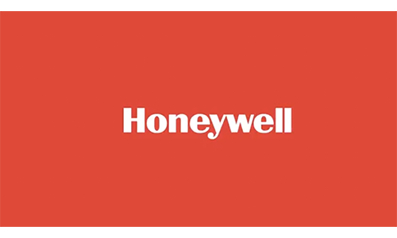

<!-- TODO 1: Create the HTML Boilerplate -->
<!DOCTYPE html>
<html lang="en">
<head>
    <meta charset="UTF-8">
    <meta name="viewport" content="width=device-width, initial-scale=1.0">
    <title>Document</title>
</head>
<body>
    
</body>
</html>
<!-- TODO 2: Add Your previous projects' HTML into the public folder -->
<h1> Nick Gordon</h1>
<p>
    <h4>Versatile Project Manager:</h4> Proven track record in building strong client relationships across various sectors, 
    certified Scrum Master (PSM1) skilled in Agile and Waterfall methodoligies, 
    and proficient in managing projects with tools like Jira and Trello, while also possessing knowledge in Wordpress, UX design, and 3D modeling.</p>
<!-- TODO 3: Take screenshots of your project previews and add the images to the images folder -->
<hr>
<!-- TODO 4: Add titles/subtitles etc. -->
<h2>Education:</h2>
<h3>Fairleigh Dickinson University, Florham Campus, Madison, NJ</h3>
<ul>
    <li>Master of Arts in Corporate and Organizational Communication……………………………………………………….May, 2017</li>
    <li>Bachelor of Arts in Communication Studies: Concentration in Multimedia Journalism……………………………….....May, 2016</li>
    <li>Graduated Cum Laude as an Undergraduate.</li>
    <li>Studied abroad in England at Wroxton College, and pursued academics in France, Scotland, Wales, and Spain.</li>
    </ul>
    <hr>
<!-- TODO 5: Add a link to the project pages -->
<h2>Professional Project Management Experience:</h2>
<h3>McCann Relationship Marketing (MRM). New York, NY. Senior Project Manager……………………………April 2022—Present</h3>
<h4>Project manager for accounts, including: </h4>
    <p>
             </p>
            <p>  </p>
              
            Thursday Night Football, Amazon eero, Honeywell, L’Oréal (NYX), Scott’s Miracle-Gro, Four Seasons Yachts and DXC.</li>
        <li> Lead a variety of digital transformation projects, from visual refreshes, to bespoke content and user flows from concept to creation, as well as sizzle reels and educational explainer videos. </li>
        <li> Scoped and staffed complex campaigns, including the NYX Duck Plump Cardi B collaboration, providing key services for Strategy, Analytics, UI/UX, Creative, and SEO.</li>
        <li> Converged into a hybrid Account role, becoming a point of contact for clients and navigating them thru project lifecycles and process improvements. </li>
        <li> Evolved the Amazon Ads account into a retainer model, leading to exponential financial growth in a single year.</li>
        <li> Tracked finances across several offices, both domestic and offshore, using bespoke Excel spreadsheets detailing project burn against scopes to forecast new projects and archive historical data.</li>
        <li> Guided internal and external teams on daily status calls and weekly standups using detailed project trackers, like Microsoft Loop and Planner.</li>
        <li> Conducted projects using both Waterfall and Agile methodologies, adapting and recontextualizing both strategies to fit MRM’s traditional protocol and client expectations. </li>
    </ul>
<h3>SprintFWD. Los Angeles, C.A. Project Coordinator……………………………………………………September 2021—April 2022 </h3>
    <ul>
        <li> Coordinator for FE and BE developers working within a Scrum framework on projects ranging from web and app development (Xponential Fitness) from the ground up, to continuous maintenance and improvements to existing platforms (TRX, SkyZone).</li>
        <li> Primary lead for client communications and providing daily statistics for team productivity (burn reports, status sheets).</li>
        <li> Overhauled the PMO’s internal structure by introducing proven project management success techniques, and reshaped the onboarding process for new team members. </li>
    </ul>
<h3>All Things Media LLC. Mahwah, N.J. Project Manager…………………………………………...September 2017—September 2021</h3>
   <ul>
        <li> Directed production and client relations for numerous high-profile projects including: The Mercedes-Benz Powerwall, New York Life Insurance eLearning Initiative and Virtual Reality Skill Builder, Cadillac Virtual Dealership, BMW Experience Guide, FlightSafety Digital Learning and Stryker 3D Reference Tools.</li>
        <li> Curated and edited all copy-written material, including scripts, web content and internal communication documents. </li>
        <li> Developed and produced a variety of immersive, educational training tools to increase productivity, bolster job/career satisfaction, and enhance product knowledge.</li>
        <li> Developed All Things Media’s internal onboarding structure, streamlined employee engagement and process materials, and implemented productivity monitoring systems across all projects.</li>
        <li> Contributed skills and resources in programming (Articulate 360 Storyline), 3D development (Unity) and Design (Photoshop), and organized deliverables using multiple Content Management Systems (CMS).</li>
   </ul>
<h3>Sony Corporation of America. New York, NY. Corporate Communications and Public Affairs Intern…..June 2016—August 2016</h3>
<ul>
    <li> Conducted event research and analyzed digital media to create memos for internal and external distribution for employees.</li>
    <li> Monitored and thoroughly researched various news sites to compile lists of valuable information pertinent for Sony operations.</li>
    <li> Collaborated with upper management on planning and executing speaker and sponsored events, and the Sony Square.</li>

</ul>
<!-- TODO 6: Add images to show the project previews
HINT for TODO 6: You can use the height attribute set to 200 to make the image smaller:
https://developer.mozilla.org/en-US/docs/Web/HTML/Element/img#attr-height -->

<!-- TODO 7: Add the Contact Me and About Me page links -->